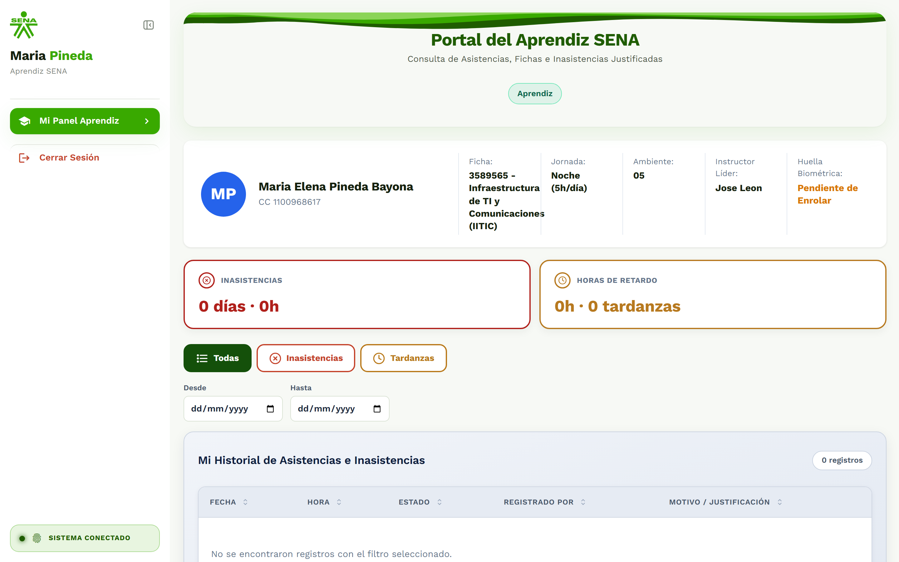
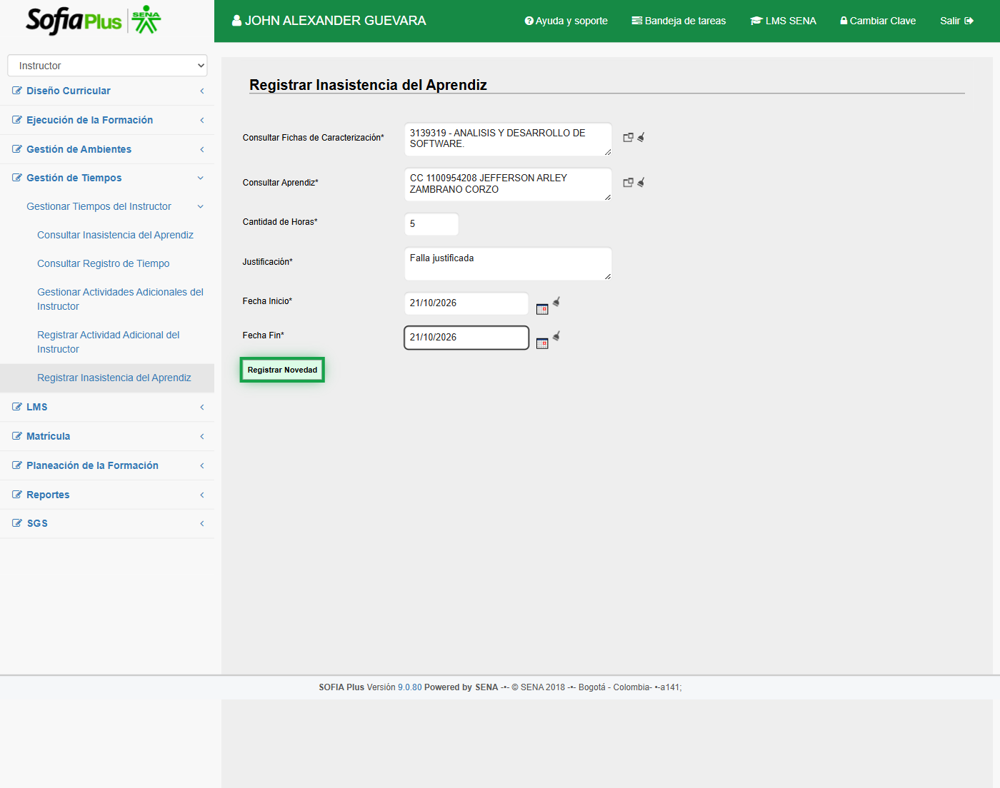

SISTEMA ASISTA
Control biométrico de asistencia institucional, seguimiento al debido proceso formativo y la ingeniería de software real que aprenderás a construir en el SENA.
La Finalidad: ¿Cómo te beneficia a ti?
ASISTA elimina la pérdida de tiempo del papel y te entrega autonomía directa sobre tu seguimiento escolar desde tu celular o computador.
Pones tu dedo en el sensor óptico y en menos de 1 segundo quedas registrado como Presente. Se recuperan más de 20 minutos de formación diaria que antes se perdían pasando lista.
Sin contraseñas complicadas: ingresas con tu número de documento y auditas al instante tus asistencias, horas de retardo acumuladas y porcentaje en vivo.
¿Tuviste cita médica o incapacidad? Radica tus soportes de EPS o SURA en PDF o foto directamente desde el portal dentro de los 5 días hábiles reglamentarios.

Objetivos del Sistema ASISTA
Los compromisos técnicos y funcionales cumplidos por el equipo para modernizar y garantizar el debido proceso en la asistencia.
Diseñar, construir e implementar una solución integral que identifique biométricamente a los aprendices en el aula presencial, compute retardos según la jornada, garantice trazabilidad y sincronice de forma autónoma con SENA Sofia Plus.
Las Tecnologías que Impulsan ASISTA
Una arquitectura moderna basada en JavaScript moderno (ES Modules) de extremo a extremo, enlace con C++ nativo y nube distribuida.
Kiosco táctil con enlace binario de bajo nivel a los drivers del sensor óptico.
Servicios RESTful distribuidos, eventos en tiempo real y base de datos NoSQL.
Portal web responsivo para aprendices e instructores y agentes autónomos.
Tiempos de Llegada: ¡Cuida tu Formación!
Estados de marcación calculados de forma automática según la hora de inicio oficial de tu jornada formativa.
Llegada puntual dentro del rango de tolerancia inicial. Se registran 0 horas de inasistencia en tu hoja de vida formativa.
Ingreso posterior al tiempo de gracia. El sistema computa automáticamente 1 hora de inasistencia en el acumulado trimestral.
Retraso severo en la sesión formativa. Se acumulan 2 horas de inasistencia en tu hoja de seguimiento.
Ausencia total a la jornada. Cierre automático al finalizar: 6 horas en diurna y 5 horas en nocturna.
Excusas Médicas: Acuerdo 009 de 2024
El sistema protege tu debido proceso formativo automatizando la radicación y verificación oportuna de tus soportes legales.
Tienes hasta 5 días hábiles (sin contar sábados, domingos ni festivos) a partir de la inasistencia para radicar tu justificación en la plataforma web.
Soportes médicos oficiales emitidos por tu EPS o SURA, constancia de fuerza mayor demostrable o citación judicial formal en formato PDF o foto nítida.
Una vez tu instructor revisa y pulsa Aprobar en el panel de control, el sistema descuenta de forma automática las horas del cálculo de riesgo de deserción.
¿Mi Huella está Segura? ¡Totalmente!
ASISTA fue diseñado para salvaguardar tu privacidad y tus datos biométricos sensibles con altos estándares de seguridad y respeto a la ley.
El sistema jamás guarda imágenes ni dibujos de tu huella. Al poner el dedo, solo se extraen coordenadas matemáticas de bifurcaciones (minucias).
Diseñado para que no se pueda reconstruir tu huella: el algoritmo genera un vector binario numérico de una vía que imposibilita recrear tu huella física.
Por tratarse de un dato biométrico sensible, su tratamiento requiere obligatoriamente tu consentimiento informado y expreso antes del enrolamiento en el sistema.
Toda la comunicación aula-nube viaja cifrada bajo HTTPS / TLS. Las contraseñas se almacenan con sellado criptográfico bcrypt con 10 rondas de salt.
El Robot RPA: Trabajando de Noche
¿Cómo viajan las fallas validadas desde el aula hasta la plataforma central SENA Sofia Plus sin intervención manual?
Si no marcas presencia, la novedad entra en estado EN_ESPERA durante 5 días hábiles para garantizarte el tiempo legal de radicar tu justificación médica.
En la nube de GitHub Actions, un agente inteligente abre un navegador Chromium headless, ingresa con credenciales cifradas y digita las fallas consolidadas en Sofia Plus.
Sofia Plus confirma el reporte exitoso y el sistema sella el registro con un candado verde 🔒, almacenando capturas de pantalla como evidencia probatoria.

Monitoreo Preventivo: ¡No Te Quedes Fuera!
Semáforo de acompañamiento implementado en ASISTA para prevenir la pérdida del cupo formativo y apoyar al aprendiz.
Asistencia constante y compromiso formativo impecable. No registras ausencias consecutivas y tu proceso formativo avanza sin ninguna observación.
Tu instructor líder recibe una alerta preventiva en el panel para dialogar contigo, conocer tus dificultades y acordar un plan de mejoramiento oportuno.
Criterio del Reglamento del Aprendiz: 3 días consecutivos injustificados o superar el límite acumulado genera reporte formal para citación a comité de evaluación.
¡Bienvenidos al Desarrollo de Software!
ASISTA es la prueba tangible de que en el SENA no solo aprendes teoría: desarrollas ingeniería de software productiva que soluciona problemas reales de nuestra comunidad.
Población activa controlada a diario en aulas del Centro Agroturístico.
Tiempo promedio medido desde el toque dactilar hasta la confirmación en pantalla.
Proyecto integral concebido, diseñado y programado por aprendices de tu titulación.